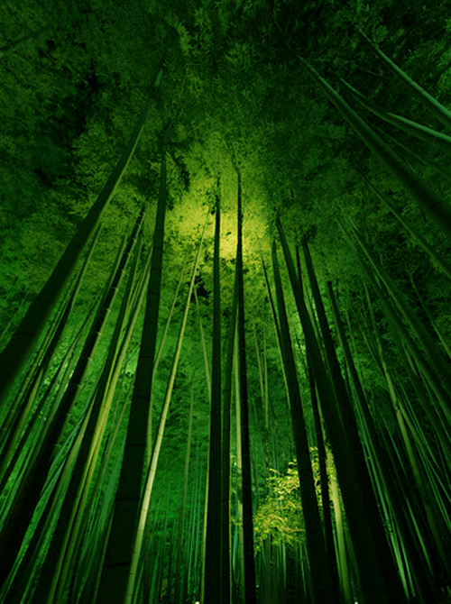

竹とは広義には、イネ目イネ科タケ亜科のうち、木本のように茎が木質化する種の総称である。しかし、通常の木本と異なり二次肥大成長はせず、これは草本の特徴である。このため、タケが草本か木本かは意見が分かれる。
BAMBOO
In a broad sense and bamboo, one of Poales Poaceae Bambusoideae, stems as woody is a species of the general term which lignification. However, unlike normal woody secondary hypertrophic growth is not, which is characteristic of herbaceous. For this reason, bamboo is split opinions or herbaceous or woody.

take01_PT
20/27